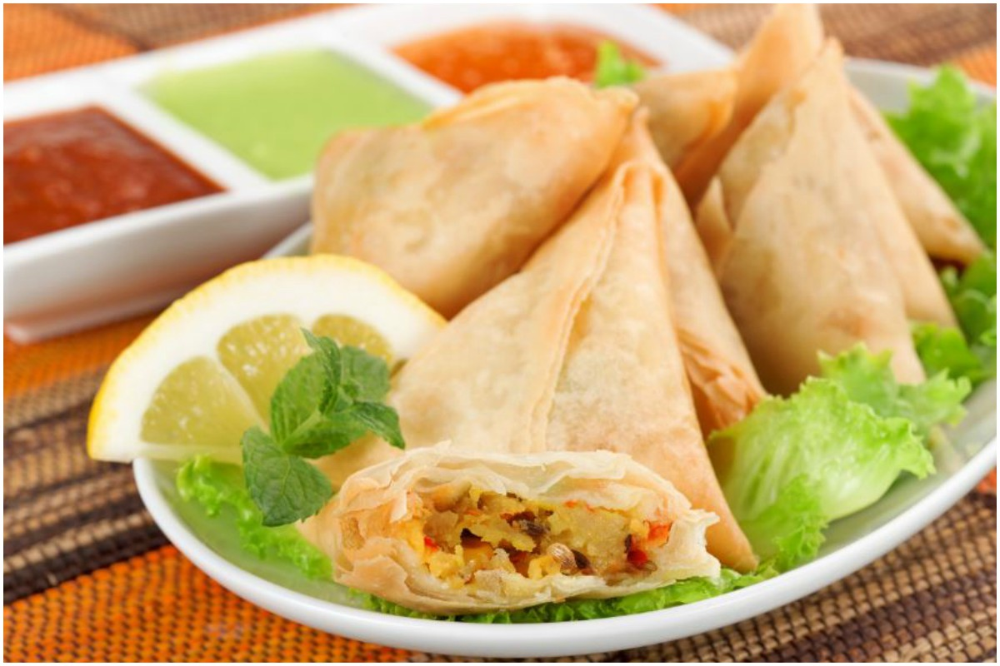

Matar Samosa

About Matar Samosa Recipe:
In this recipe, the classic aloo filling is replaced with fresh matar that is cooked in spices
Then small samosas are made and enjoyed. This quick and easy recipe can be made with just a few ingredients.
Ingredients of Matar Samosa
- 1 Cup All-Purpose Flour
- 1 tsp Salt
- 1 tbsp Ghee
- 1 and a half cup Fresh Peas
- 1 tsp Red Chilli Powder
- 1 tsp Coriander Powder
- 1 tsp Garam Masala
- 1 tsp Amchur Powder
- Salt as per taste
How to Make Matar Samosa
- To make the dough, take all-purpose flour, salt, ghee, water and mix. Make a dough and let it rest.
- Till then, prepare the stuffing. For that add oil in a pan and throw in cumin seeds, slit green chilli and green peas. Mix it well.
- Now add spices like red chilli powder, coriander powder, amchur powder, garam masala and salt. Combine again.
- Once done let this mixture cool down.
- Now, from the dough make, bite size samosa shapes, fill in the stuffing and deep fry them till crisp.
- Once done, take them out and enjoy!
Recipe Notes
For more recipe like this. Click here